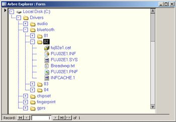

Arbres binaires
Les piles, les files et les listes sont des structures linéaires. Les données y sont rangés selon un ordre précis. Il existe cependant d'autres structures qui ne sont pas linéaires. C'est le cas des graphes qui seront étudiés plus tard et en particulier des structures arborescentes : les arbres.
Notion d'arbre
Un arbre est un nœud possédant éventuellement un ou plusieurs enfants qui sont eux même des nœud possédant éventuellement un ou plusieurs enfants. Chaque nœud (sauf celui de départ) ne possédant qu'un seul nœud parent.
Exemples :
- Les listes simplement chaînées sont des exemples d'arbre très simple où les nœuds (sauf le dernier) ne possède qu'un seul enfant.
- Les dossiers et les fichiers sur un disque dur forment un arbre. 


Vocabulaire :
- Un arbre est hiérarchisé, à partir du seul nœud qui n'a pas de parent : sa racine.
- Les nœuds qui n'ont pas d'enfants sont des feuilles.
- Les chemins partant de la racine à l'une des feuilles est un branches.
- La taille d'un arbre est égal au nombre de nœuds (racine et feuilles comprises).
- La hauteur d'un arbre est égale à la longueur de la plus grande branche.

- Quelle est la racine de cet arbre ?
- Quelles sont les feuilles de cet arbre ?
- Quelles est la hauteur de cet arbre ?
- Quelles est la taille de cet arbre ?
Arbres binaires
Nous allons maintenant nous concentrer sur les arbres binaires : un arbre dont les nœuds ont uniquement 0, 1 ou 2 enfants. On appelle alors ces enfants fils droit et fils gauche ou encore sous arbre droit et sous arbre gauche.


- Quelle est la racine de cet arbre ?
- Quelles sont les feuilles de cet arbre ?
- Quelles est la hauteur de cet arbre ?
- Quelles est la taille de cet arbre ?
- Quel est le sous arbre droit du nœud B ?
- Quel est le sous arbre gauche du nœud I ?
- Quel est le sous arbre gauche du nœud G ?
Parcours d'un arbre binaire
Parcours en largeur
Il y a plusieurs façons de parcourir un arbre. Le premier présenté ici est le parcours en largeur qui passe par chaque nœud niveau après niveau. Il est très facile de parcourir un arbre en largeur grâce à une file :
Il est très facile de parcourir un arbre en largeur grâce à une file :
créer une file vide
y enfiler la racine
tant que la file n'est pas vide :
défiler un nœud
réaliser le traitement voulu sur ce nœud
enfiler le fils gauche et le fils droit de ce nœud à la file
Parcours en profondeur
En remplaçant la file par une pile, on explore l'arbre branche par branche. On parle alors de parcours en profondeur.
créer une pile vide
y empiler la racine
tant que la pile n'est pas vide :
dépiler un nœud
réaliser le traitement voulu sur ce nœud
empiler le fils droit et le fils gauche de ce nœud à la pile
- avant ces enfants, on parle de parcours préfixe ;
- après le fils gauche mais avant le fils droit, on parle de parcours infixe ;
- après ces enfants, on parle de parcours postfixe.
- En réalisant un parcours en profondeur grâce à une pile comme vue ci-dessus, quel type de parcours réalise-t-on ?
- En réalisant un parcours en profondeur préfixe du graphe suivant, quel est l'ordre de traitement des nœuds ?
- En réalisant un parcours en profondeur postfixe du graphe suivant, quel est l'ordre de traitement des nœuds ?
- En réalisant un parcours en profondeur infixe du graphe suivant, quel est l'ordre de traitement des nœuds ?
fonction parcours(nœud)
réaliser le traitement désiré sur le nœud
appeler la fonction parcours sur le fils gauche
appeler la fonction parcours sur le fils droit
fonction parcours(nœud)
appeler la fonction parcours sur le fils gauche
appeler la fonction parcours sur le fils droit
réaliser le traitement désiré sur le nœud
fonction parcours(nœud)
appeler la fonction parcours sur le fils gauche
réaliser le traitement désiré sur le nœud
appeler la fonction parcours sur le fils droit
Implémentations
Grâce à un tableau ou à un dictionnaire
On peut représenter les informations de chaque nœud dans un tableau.Exemple :
| id_nœud | valeur | fils_gauche | fils_droit |
|---|---|---|---|
| 0 | "r" | 1 | 2 |
| 1 | "a" | None | None |
| 2 | "b" | None | 3 |
| 3 | "d" | None | None |
arbre = {}
arbre[0] = ["r", 1, 2]
arbre[1] = ["a", None, None]
arbre[2] = ["b", None, 3]
arbre[3] = ["d", None, None]
arbre = {}
arbre["o"] = ["o", None, "m1"]
arbre["m1"] = ["m", None, None]
arbre["p"] = ["p", "o", "m2"]
arbre["e"] = ["e", None, None]
arbre["m2"] = ["m", "e", "s"]
arbre["s"] = ["s", None, None]
arbre = [["r", 1, 2],
["a", None, None],
["b", None, 3],
["d", None, None]]
arbre = [["e", None, None],
["i", None, None],
["o", 1, None],
["p", 2, 4],
["r", 0, 5],
["s", None, None]]
Grâce à des listes imbriquées
On peut pousser la structure précédente un peu plus loin. Comme les identifiants sont utilisés qu'une seule fois pour identifier un fils, on peut remplacer cet identifiant par la liste représentant l'arbre directement. Toujours pour l'arbre précédent, cela donnerai les listes imbriquées :arbre = ["r", ["a", None, None], ["b", None, ["d", None, None]]
arbre = ["c", ["e", ["i", None, None], ["s", None, None]], ["r", None, ["e", ["s", None, None], None]]]
Grâce à la programmation orienté objet
Un arbre est simplement définit par 3 éléments : sa valeur, son fils gauche et son fils droit. On peut donc utiliser un objet Arbre définit par 3 attributs : la valeur (le type dépend des informations à stocker dans l'arbre) et les deux fils (droit et gauche) eux mêmes de type Arbre. Pour enregistrer un arbre en mémoire, on peut alors :-
Ecrire une longue instruction détaillant les fils de chaque nœud. Exemple :
arbre = Arbre(1, Arbre(2, None, None), Arbre(3, Arbre(4, None, None), Arbre(5, None, None)))
-
Commencer par définir la racine puis ajouter les fils par une suite d'instruction. Exemple :
arbre = Arbre(6, None, None)
arbre.fils_gauche = Arbre(10, None, None)
arbre.fils_droit = Arbre(7, None, None)
arbre.fils_droit.fils_gauche = Arbre(9, None, None)
arbre.fils_droit.fils_droit = Arbre(8, None, None) -
Commencer par le niveau le plus bas puis remonter jusqu'à la racine. Exemple :
A = Arbre(15, None, None)
B = Arbre(14, None, None)
C = Arbre(13, None, None)
D = Arbre(12, A, B)
arbre = Arbre(11, C, D)
- Créer une classe Arbre possédant les trois attributs :
- valeur
- fils_gauche
- fils_droit
-
Utiliser cette classe pour enregistrer l'arbre suivant dans une variable A.

- Ajouter une méthode parcours_largeur() affichant la valeur des nœuds de l'arbre selon un parcours en largeur.
- Ajouter une méthode parcours_prefixe() affichant la valeur des nœuds de l'arbre selon un parcours en profondeur prefixe.
- Ajouter une méthode parcours_infixe() affichant la valeur des nœuds de l'arbre selon un parcours en profondeur infixe.
- Ajouter une méthode parcours_postfixe() affichant la valeur des nœuds de l'arbre selon un parcours en profondeur postfixe.